Dashboard/Steering Hanger Beam Removal/installation
Dashboard/Steering Hanger Beam Removal/InstallationSpecial Tools Required
KTC trim tool set SOJATP2014 *
* Available through the American Honda Tool and Equipment Program
SRS components are located in this area. Review the SRS component locations, precautions and procedures before doing repairs or service.
NOTE:
- Use the appropriate tool from the KTC trim tool set to avoid damage when prying components.
- Have an assistant help you when removing and installing the dashboard/steering hanger beam.
- Take care not to scratch the dashboard, body and other related parts.
- Put on gloves to protect your hands.
1. Make sure you have the anti-theft code for the audio or the navigation system, then write down the audio presets.
2. Disconnect the negative cable from the battery, and wait at least 3 minutes before beginning work.
3. Remove these items:
- Driver's dashboard lower cover
- Driver's dashboard undercover
- Passenger's dashboard undercover
- Center console
- Glove box
- Kick panel, both sides:
- A-pillar trim, both sides
- Steering column
- Stereo amplifier, with premium sound system
Driver's side
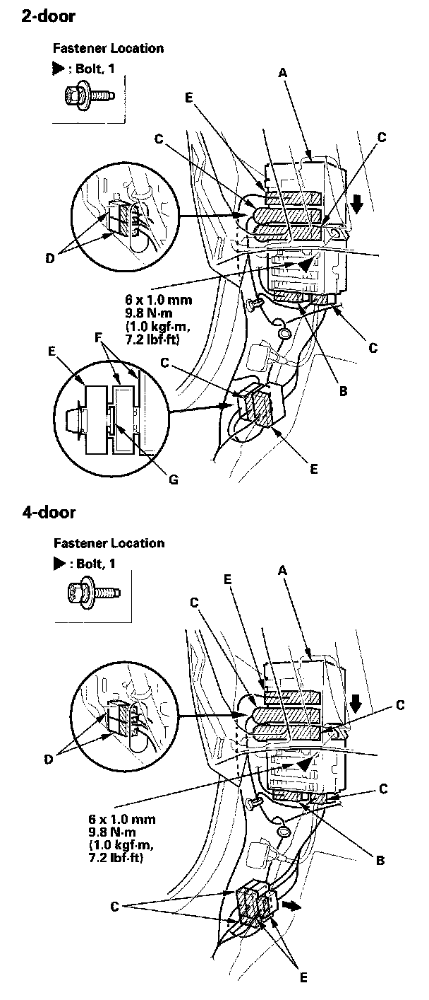
4. Remove the bolt securing the under-dash fuse/relay box (A). Disconnect the roof wire harness connector (B), then lower the box.
5. From under the dash, disconnect the cabin wire harness connectors (C), driver's door wire harness connectors (D), and floor wire harness connectors (E) from the dashboard wire harness connectors (F) or the under-dash fuse/relay box. On 2-door, release the joint (G) to remove the dashboard wire harness connectors from the floor wire harness connector.
Middle portion
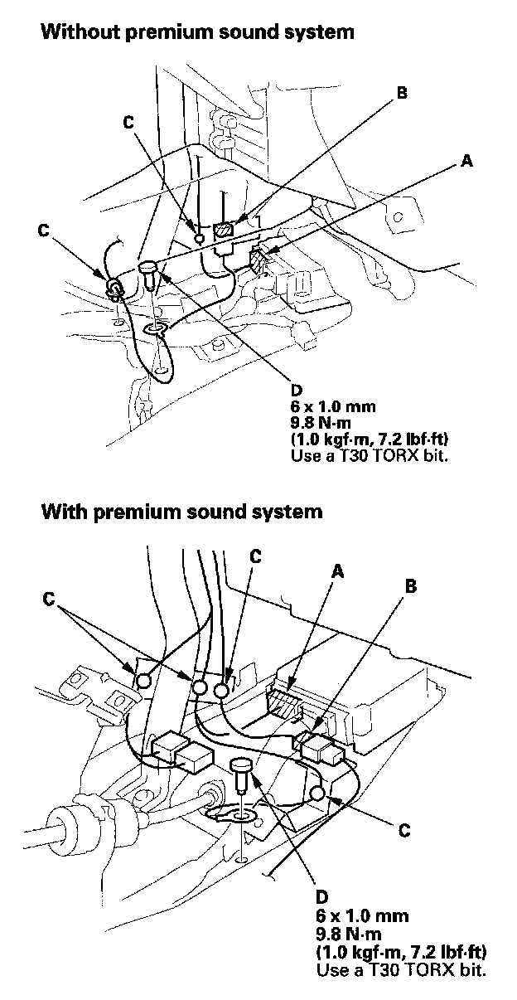
6. Disconnect the SRS unit connector (A), antenna connector (B), and detach the wire harness clips (C). Using a T30 TORX bit, remove the ground bolt (D).
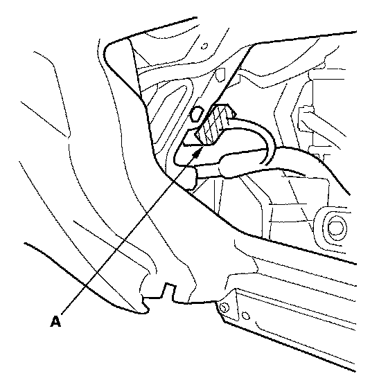
7. Disconnect the A/C subharness connector (A) in the glove box opening.
Passenger's side
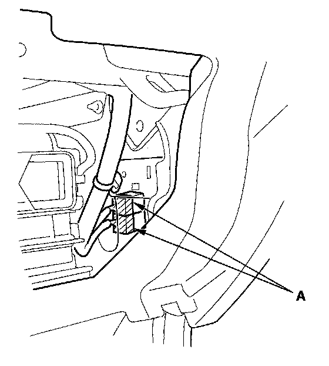
8. From under the dash, disconnect the passenger's door wire harness connectors (A).
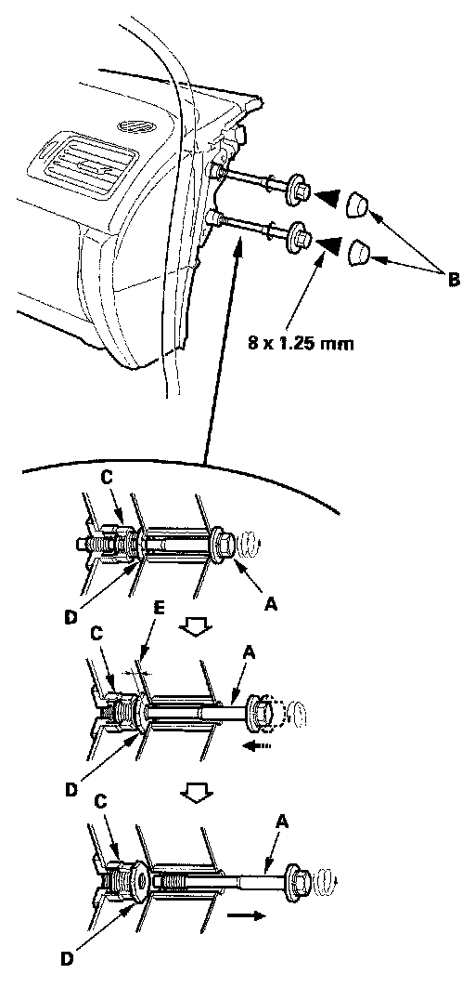
9. Remove the special bolts (A) from outside the passenger's door.
1. 4-door: Remove the caps (B).
2. Loosen the special bolt until its threads have come off the sleeve (C). The bolt will be screwed into the inside female screw of the adjusting nut (D) by loosening the bolt. Because of the thread locks on the thread of the bolt, the bolt and adjusting nut will be fixed.
3. Loosen the bolt again to screw the externally threaded nut into the sleeve fully, then the gap (E) will be between the nut and body.
4. Remove the bolt.
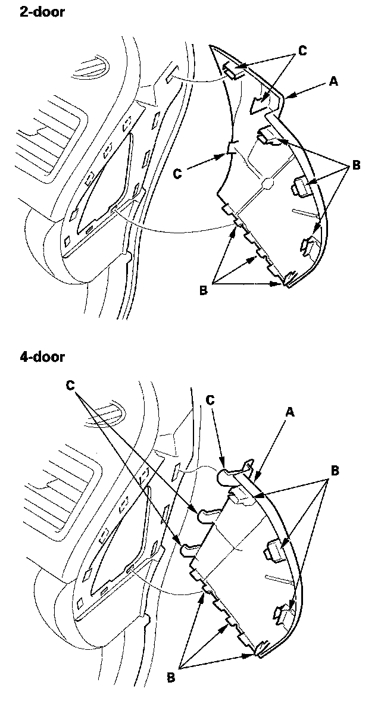
10. If necessary, remove the dashboard side cover (A).
1. Gently pull out along the rear edge to release the hooks (B).
2. Gently pull out on the side cover to release the hooks (C), then remove the side cover.
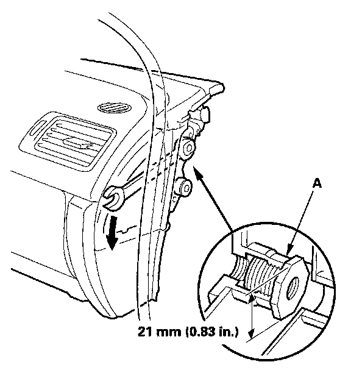
11. If the adjusting nuts (A) are not screwed fully into the sleeve when removing the special bolts, screw externally threaded nuts into the sleeve with a 21 mm open-end wrench. In this case, the special bolt should be replaced with a new one because its thread locks were worn out.
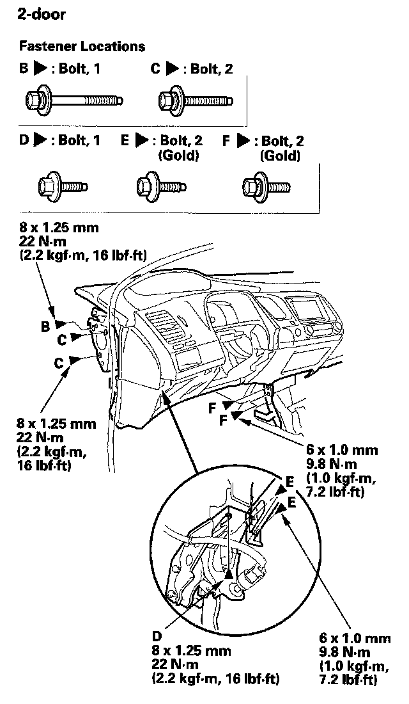
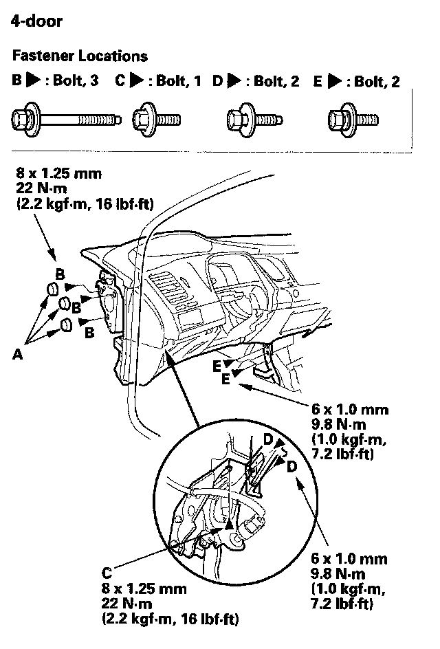
12. Remove the caps (A) (4-door only), then remove the bolts (B, C, D, E, F) from outside the driver's door.
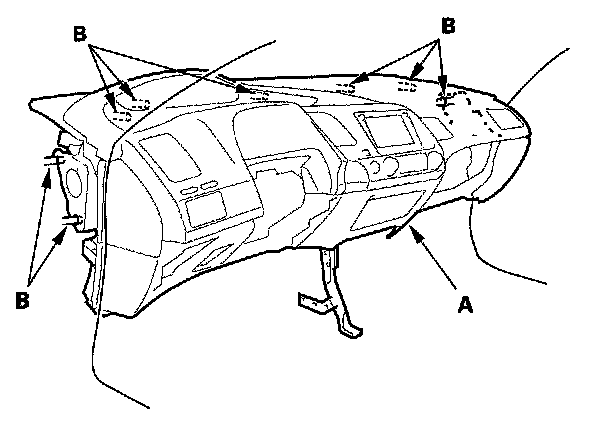
13. Lift up on the dashboard (A) to release it from the guide pins (B). Carefully remove the dashboard through the front door opening. Take care not to scratch the body with the adjusting nuts on the passenger's side.
NOTE: Do not rest the dashboard on its lower center cover opening, or it may be damaged. Lay it on its front or back.
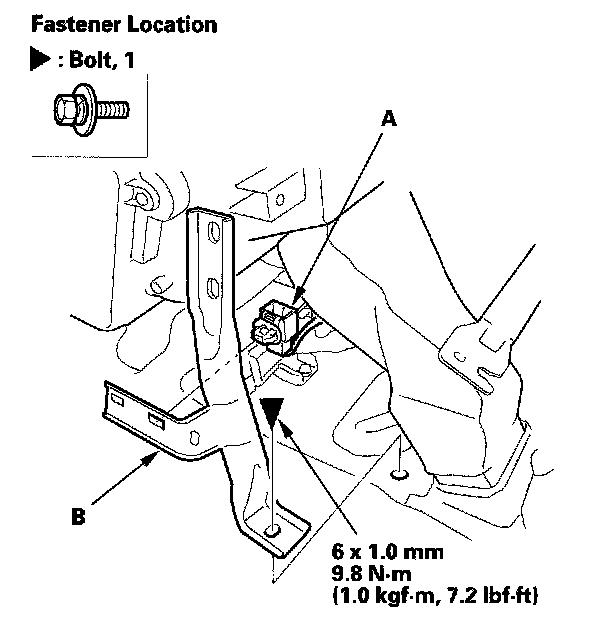
14. Remove the bolt and detach the connector clip (A), then remove the center pipe extension (B).
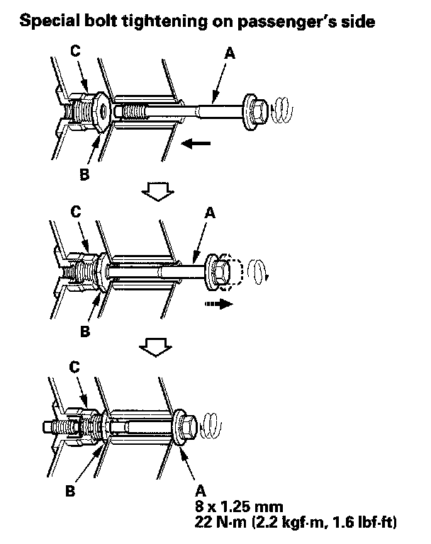
15. Install the dashboard in the reverse order of removal, and note these items:
- Before tightening the bolts, make sure the wire harnesses are not pinched.
- Make sure the connectors are plugged in properly, and the antenna lead and each cable are connected properly.
- If you screwed the adjusting nut into the sleeve with an open end wrench to remove the dashboard, and either of the special bolts came off the adjusting nut before having screwed the adjusting nut fully into the sleeve, replace the special bolt with a new one.
- Before reinstalling the dashboard, screw all of the adjusting nuts into the sleeves fully by hand, reinstall the floor joint bracket on the center frame, and slightly tighten the mounting bolts.
- After seeing the dashboard on the body, reinstall all of the mounting bolts to the dashboard, tighten the driver's side bracket to the specified torque, then torque the special bolt (A) on the passenger's side.
- First screw the special bolt into the adjusting nut (B), they will be fixed because of the thread lock on the bolt. Go on tightening the bolt with the adjusting nut, the externally threaded nut is loosened from the sleeve (C) until the nut contacts the inside face of the body. Then tighten the bolts again to the specified torque.
- If the adjusting nut doesn't contact the body while tightening the special bolt fully, the nut shouldn't be loosen with an open-end wrench. In this case, replace this special bolt with a new one.
- Apply medium strength type liquid thread lock to the bolts securing the center bracket and the dashboard before reinstallation.
- Reconnect the negative cable to the battery.
- Enter the anti-theft code for the audio or the navigation system, then enter the audio presets.
- Set the clock.
- Check for any DTCs that may have been set during repairs, and clear them.